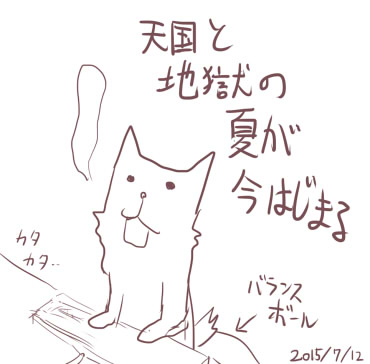

シルバーセカンド開発日誌
2015年07月
■
2015-07-25 (土) フリカツ13 レビュー！▼【振リ返リマセン勝ツマデハのお話 その13】
「不思議のクロニクル 振リ返リマセン勝ツマデハ」、
7月23日よりすでにPS Storeにて体験版がリリース済みです！
PS4、PS Vita（Vita TV）で遊べますので
お持ちの方はよければぜひ。
体験版についての感想は前回挙げた通りなんですが、
製品版だと何ができるのか公式側で
もうちょっと明らかになってると嬉しいかもしれませんね。
現状だといちおうラスボスっぽい相手が倒せちゃいますから。
ここで言っても(すでに予想が付くという意味で)判断材料に
ならない人のほうが多そうですが、
フリカツ体験版と製品版の違いはおおよそ以下の通りです。
【体験版でもできること】
･イージーモードのタイケンバン・チュートリアルの世界で遊べる
・創世石（伝説ポイント）・夢幻石（次元の金貨）を
ためることができる
・夢幻倉庫に1個だけアイテムを保管できる
【製品版で解放されること】
・創世石で特徴やクラス解放、倉庫拡張、クラスのタイプC解放が可能
・夢幻石で城の改築が可能に（体験版では城の住人クエストもなし）
・英霊石というものが取得可能、それで何かできるとか
・難易度ノーマル、ハードやマニアックモードも遊べる
・好きな世界を指定して遊べる
・通信対戦が遊べる
・プレイ中の通信要素が使える（同じ世界の人を見る機能）
・キャンペーンワールドが遊べる
・DLCが遊べる（たぶん随時公開されていくと思います）
【プレイレビュー色々】
また、フリカツのプレイレビューが色々挙がってたんですが、
その中で新しい情報を発見できたのをいくつかピックアップします。
【Joshinの試用レポート】
http://joshinweb.jp/game/furikatsu.html?ACK=REP&CKV=150725
製品版特有の情報として、スタート時の北と南に仲間がいて、
どちらか一方を連れていけるようなことが書いてあります。
南だとナミィが仲間にできるそうで、確定で連れていける感触です。
というかJoshinさんこんなレポート書いてるんですね！
【Gamer プレイレビュー】
http://www.gamer.ne.jp/news/201507250001/ (ｱｰｶｲﾌﾞ)
こちらはお城システムに触れられているのが新しい部分でしょうか。
城の住人「叫ぶ根っこ」がなんと「養殖マンドラゴラ」として続投！
フリカツ版の理術士のType Bはかわいいですよね！
【雑誌レビュー】
ファミ通レビューでは7、8、8、7のシルバー殿堂でした。
一方、電撃プレイステーションでは90、85、95、95で、
なんと今回ピックアップされた作品中では最高評価だったようです！
そして実はどちらのレビューも原案に触れられているコメントがあります。
嬉しいのやらなんと言えばいいのやら。
どちらも「新しいゲームシステム」や、「次々と要素が解放されて
次の冒険に繋がる仕組み」が大きく評価されているようです。
特にアンロック要素が色々あるのはなるほどいい効果をもたらすようで、
今後の開発に際して我ながら勉強になりますね。
「1回のプレイが次に繋がるシステムが多いので、力尽きることは
ストレスより次のプレイへのやる気に繋がる」
「クラスごとに3タイプの画像が選べるので気分を変えて遊べる」
といったコメントを見ると、原作でもああいった仕組みを
入れててよかったなと思います。
この辺りの感触はようやく私もフリカツで実際に感じられそうなので、
おそらく原作で皆さんが感じたのと同じか
それ以上の楽しみが味わえそうです。
原作でのリプレイ性向上を意図した機能はおおよそ評価されてて、
大枠としては私もうまくやれてた感じが、
そしてスパイク・チュンソフトさんが
いいところをいいところとして採用してくださった感じがあります。
「原作をプレイ済みだといくつかの隠し要素が分かってしまう」
というコメントが電撃PSさんのほうにあったので、
同じ方法で解けるギミックもあるようですね。
【インターフェースの向上も期待できそう？】
またプロデューサさんも出演なさっていた
プレイ実況生放送によると、インターフェース面に関して
地面のアイテムを直接使えたりできるように対応中、とのことですので、
（たぶん予算次第で）インターフェース周りも
今後のアップデートが期待できそうです。
<7/21 NGC『不思議のクロニクル 振リ返リマセン勝ツマデハ』放送>
http://live.nicovideo.jp/gate/lv226146261
（放送終了/タイムシフト可能なのは2015/07/28終日まで）
なんとこの放送中に「やさしい旅」のクリアまでしちゃってますが、
今回の放送は個人的にとても面白かったので、
興味がある方はぜひご覧ください。
「不思議のクロニクル 振リ返リマセン勝ツマデハ」の発売は7/30です。
Vita版だと3000円くらいなので、割とお買い得ですよ！
今後のアップデートやDLCにも期待できるかもなので、
携帯ゲーム機で遊びたい、リッチな片道勇者を
遊びたいという方はよければぜひ。 ■
2015-07-19 (日) フリカツ12 体験版公開▼【振リ返リマセン勝ツマデハのお話 その12】
「不思議のクロニクル 振リ返リマセン勝ツマデハ(ｱｰｶｲﾌﾞ)」
PS plus限定ですがついに体験版が公開されたようです！
一般の方は23日からなのでもう少々お待ちください。
【ファミ通さんよりインタビューいただきました】
『不思議のクロニクル 振リ返リマセン勝ツマデハ』のもとになる
『片道勇者』の開発者SmokingWOLF氏にインタビュー
http://www.famitsu.com/news/201507/17083549.html(ｱｰｶｲﾌﾞ)
主張したいことはおおむねそのまま載せていただきましたが、
調子に乗って書いた
「横ケモ耳がいいんだよぉぉネムリハァハァ！」な主張も
そのまま載ってしまいました。これからずっと残るんでしょうか。
フリカツの感触ですが、システム的には
おおよそ片道勇者プラス準拠な感じで、ほぼ期待通りに遊べそうです。
開発者個人としてはまさにこういうのが欲しかったんですよ！
という感じで非常にウキウキしてます。
というのも、さすがに開発者本人では
原作となるプラス版でも真剣には熱中できませんでしたからね。
中身を全部知ってたり、チート（ズル）が使える立場だと、
本当にゲームの楽しみが損なわれてしまうなと思います。
皆さまからは気になる点も徐々に挙がってきているんですが、
風来のシレン5+ではリリース後にインターフェースの修正などが
行われたそうなので、こちらもそれに期待したいところです。
ただ小売りさんの注文が3000本分しかなかったとかだと
さすがに新しい予算が出なさそうなので、
フリカツの未来のためにもたくさん売れることを祈っています。
「まだプラスやってないんだよなー」という方には、
特にフリカツはおすすめできそうですよ。
フリカツ製品版ももう11日くらいで発売ですが、
もしよかったら、フリカツの次に片道勇者プラスも
遊んでみてくださると面白いかもしれません。
片道勇者プラスの見た目は地味ですが、
表と裏のちょっと違うストーリーをなぞれると思います。
「これの元ってどうだったんだろ？」
「どんなキャラが元になったんだろ？」
と興味がある方は、ぜひ遊んでみてください。
公式価格は500円です！ ■
2015-07-12 (日) フリカツ11 体験版！▼【振リ返リマセン勝ツマデハのお話 その11】
「不思議のクロニクル 振リ返リマセン勝ツマデハ
（ｱｰｶｲﾌﾞ/公式ページへ）」
ついにオープニングムービーが上がってました！
そしてなんと！
PS plus（月500円くらいのサービス)に入っている人は
7/16（木）から「振リ返リマセン勝ツマデハ」の体験版が
ダウンロードできるとのことです！
なお、PS plusに入ってなくても7/23から体験版プレイ可能ですので
突撃したい気持ちに応じてそれぞれご利用ください。

私はまだちょっと忙しくて、なかなかそれどころじゃない状況です。
というか、そもそもVita TVが自分の持ってるディスプレイで
映らないことが判明してドタバタしています。
テレビに繋げば動くらしいという噂ですが
当たり前のように自室にテレビがある時代も、今は昔かもしれませんね。
というか､デジタル移行期に家のテレビほとんど捨てちゃったんですよ！
残っててもせいぜいアナログテレビ！
Vita TVはHDMI専用なのでアナログテレビには繋げません。
日本で据え置きゲーム機があんまり売れてないらしいのも、
実はテレビ不足が背景にあったりしないかと考えさせられます。
リビングのテレビで親御さんの前でも
遊べるようなゲームならいいんですけれど、
そうでないゲームは自室にテレビがない限りあまり遊べないでしょうしね。
何よりテレビ置いても見るものがない！
WiiUの、ゲームパッドだけで遊べるゲームにはお世話になってます。
少し話が脱線しましたが、いよいよ今週、
実際にフリカツに触れるチャンスがやってきます。
PS4かPS Vitaをお持ちの方は、体験版だけでも遊んでみると
どういう違いがあるのか分かって面白いかもしれません。
そういう私は緊張で手が震えています。いざこういう場面になると、
タイトルが全然違うことに感謝したい気持ちが強いです。
どちらかが何かをやらかしてもお互い被害が少ないってのは気楽ですし、
成功したときはそれぞれの名誉になるのでがんばりがいがあります。
不思議のダンジョンシリーズは私のゲーム観を大きく変えるほどに
楽しませていただきましたので、本件でスパイク・チュンソフトさんに
何かしら貢献できていればいいなあ、と思っています。
ただ現状の雰囲気を見るに、売上げのほうはなかなか心配です。
ゲームの立ち位置的に考えて広告にもコストをかけられないでしょうし、
新規IPをいかに安いコストで多く売るかを勉強させていただく
いい機会になるかもしれません。
体験版で興味を持ってくれる人が増えるといいんですけれどね。 ■
2015-07-04 (土) フリカツ10 クラス▼【振リ返リマセン勝ツマデハのお話 その10】
「不思議のクロニクル 振リ返リマセン勝ツマデハ」、
いよいよ発売まで4週間を切りましたが、
皆さまいかがお過ごしでしょうか。
どんな感じになるのか答えが分かる日が近付いているということで、
そろそろドキドキしてきましたよ。
それはそうと、公式の略称はどうやら「フリカツ」になったようです。
カタカナなので打ちやすい、はず！
（前回挙げた紹介映像に映ってたツイッター連動機能画面に出てました）
【山盛り新クラス】
フリカツでは大量の新クラスが用意されることがウリになってます。
振リ返リマセン勝ツマデハ 公式ページ
http://www.spike-chunsoft.co.jp/furikatsu/(ｱｰｶｲﾌﾞ)
6月26日の更新で、公式ページの「クラス」欄に
大量の新クラスが紹介されてるので気になるかたはぜひ。
立ち絵が個性豊かで華やかですね。
さすがに対戦を考慮すると弱クラスを入れにくいのか、
あるいは他の何らかの理由で、「観光客」みたいな
縛りクラスは今のところいないようです。
敵感知ができる狩人は相変わらず強い予感がしてますが、
果たしてどうなるでしょうね。
と思いましたけど、敵召喚のワナには無力すぎますね。
それぞれ新たに苦手なものと得意なものが出そうで、
今から楽しみです。
また、目玉として挙げられることは少ない部分ですが、
面白いアイテムもたくさん増えてるかもしれません。
この辺のデータ数の多さやバランスはローグライクを
一番効率よく面白くできる部分だと考えているんですが、
あんまり注目されない部分なので、ここは実際に遊ぶしかなさそうです。
【荷運び馬参戦！！】
「システム」→「仲間と協力NPC」のところを見ると
荷運び馬がそのまま参戦してますね。
突進による高い荷物防衛力もそのままでしょうか。
仲間と協力NPCがシステム的に分かれているのは
そのまま継承されるようです。
仲間と協力NPCで2種あるのはややこしいため
全部「協力NPC」に統一されるかなと思っていたので、
初出のときにはちょっと意外だと感じた部分ですね。
あとどうでもいいですが、紹介映像をよく見ると
「太陽のアーリア」（プラス版で理力を教えてくれる人）も
出てたりしますので、この調子なら「占い師アウリス」も出てそうです。
【Steam版片道勇者プラスについて】
いろいろなタイミングが合わなくなった都合で、
Steam版片道勇者プラスのDLC公開は8月予定となってしまいました。
期待してくださっている皆さまには誠に申し訳ございません。
ひとまずデータなどはできあがっているんですが、今のSteamでは
プロモーションのタイミングなどを合わせないとまちがいなく爆死するので
それで時期の調整が入っている感じです。
フリカツより先に出せなかったのがちょっと残念かもしれませんね。
（たぶんフリカツの後にプラス版を買う人はあまりいないでしょう）
それと前回に引き続きのご連絡ですが、
来月、7/26（日）から第七回ウディコンも開催です！
参加される方はお忘れなく！ 2015年07月
Copyright © SmokingWOLF / Silver Second
 カテゴリ: 片道勇者
カテゴリ: 片道勇者 カテゴリ: 片道勇者
カテゴリ: 片道勇者